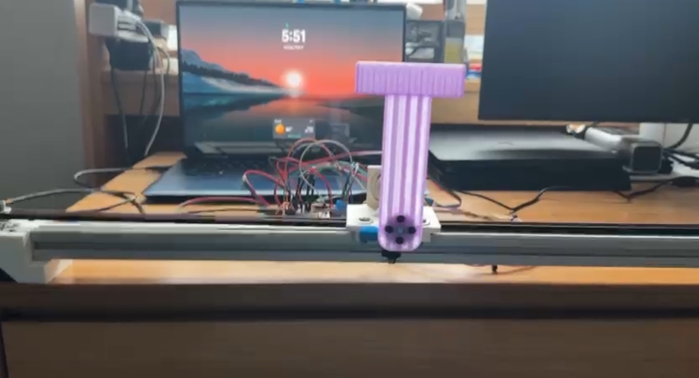
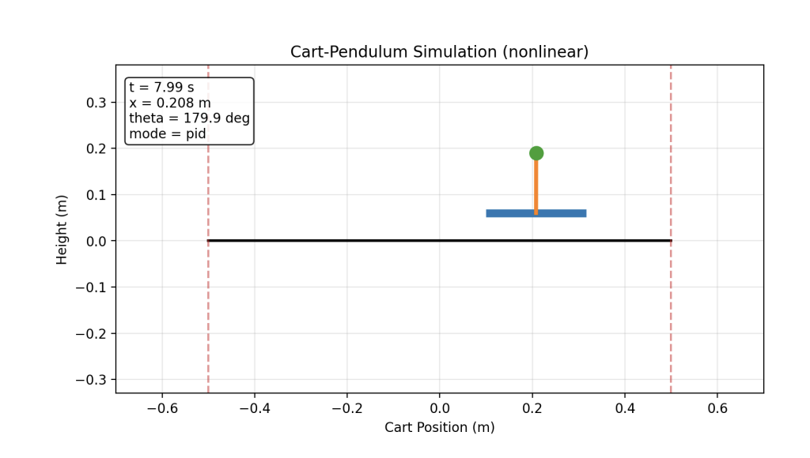
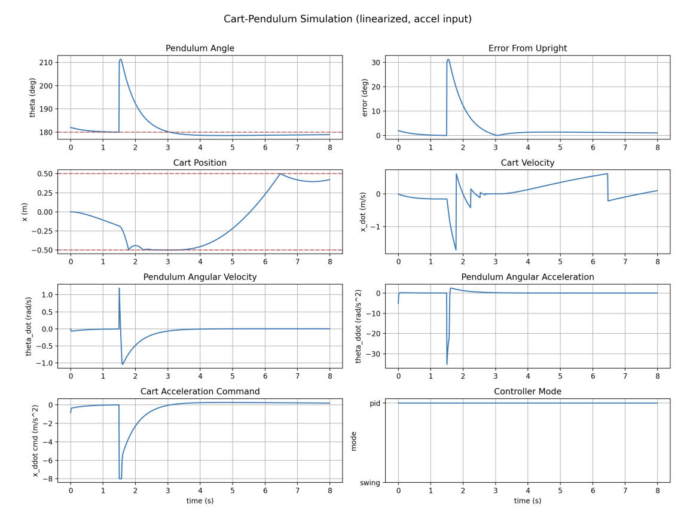

Inverted Pendulum Stability Using Linear Motion
Control Systems, Mar 2026 – May 2026
Project Description
A control systems project on stabilizing an inherently unstable inverted pendulum mounted on a cart. I developed a Python-based simulation framework covering both the linearized and full nonlinear cart–pendulum dynamic models, implemented PID stabilization and energy-based swing-up control, and built real-time visualization plus a prototype web interface so the system's behavior can be explored interactively.
My Responsibilities
- Developed a Python-based simulation framework for inverted pendulum stabilization using both linearized and nonlinear cart–pendulum dynamic models.
- Implemented and analyzed PID-based stabilization and energy-based swing-up control algorithms for balancing the unstable pendulum system.
- Performed controller tuning and gain sensitivity analysis for the proportional, integral, and derivative parameters using numerical simulations and response metrics such as overshoot, settling time, and disturbance recovery.
- Built the simulation environment with NumPy and Matplotlib using fourth-order Runge–Kutta (RK4) numerical integration, real-time visualization, and animation of the pendulum dynamics.
- Designed a prototype web-based educational interface to visualize control system behavior and allow interactive modification of controller and system parameters.
Design Decisions & Tradeoffs
- Compared linearized and nonlinear system behavior to evaluate controller robustness outside the small-angle operating region — the linear model is convenient for tuning but its predictions degrade quickly at large angles.
- Chose RK4 integration over simpler Euler stepping for numerically stable simulation of the fast, stiff pendulum dynamics without an excessively small time step.
- Separated swing-up (energy-based) from stabilization (PID) with a switching region around the upright equilibrium, since a single linear controller cannot bring the pendulum up from rest.
Skills I Learned
- Modeling and control of an inherently unstable, nonlinear cart–pendulum system.
- PID design, gain tuning, and stability analysis around an unstable equilibrium.
- Energy-based swing-up control and controller switching logic.
- Numerical simulation with RK4 integration, real-time visualization, and animation in NumPy and Matplotlib.
Project Links
Photos


